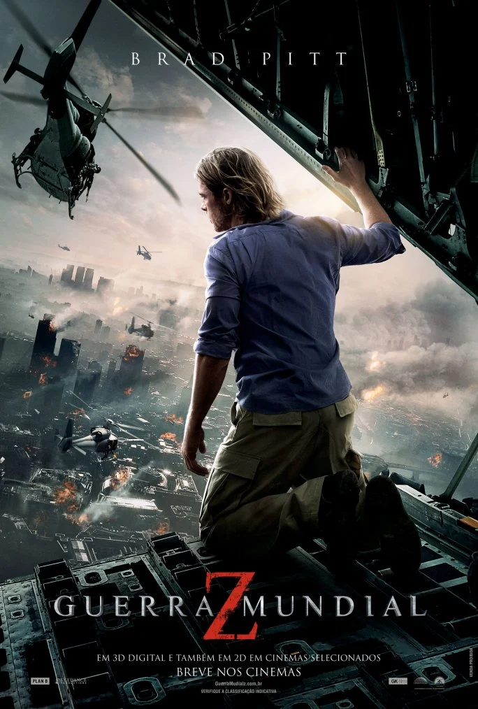

Aqui você encontra uma seleção dos melhores filmes de todos os tempos. Aproveite para conhecer e explorar os títulos que marcaram gerações, com suas histórias envolventes e atuações memoráveis.
| Filme | Imagem | Sinopse |
|---|---|---|
| Moana um mar de aventuras | |
Moana Waialiki é uma corajosa jovem, filha única do chefe de uma tribo na Oceania, vinda de uma longa linhagem de navegadores. Quando os pescadores de sua ilha não conseguem pescar nenhum peixe e as colheitas falham, ela descobre que o semideus Maui causou a praga ao roubar o coração da deusa Te Fiti. Entusiasta das viagens marítimas, a jovem se vê querendo descobrir mais sobre seu passado e ajudar a comunidade, mesmo que a família queira proteger Moana a qualquer custo. Então, ela resolve partir em busca de seus ancestrais, habitantes de uma ilha mítica que ninguém sabe onde é. A única maneira de curar a ilha é persuadir Maui a devolver o coração de Te Fiti, então Moana parte em uma jornada épica pelo Pacífico. Moana começa sua jornada em mar aberto, onde enfrenta terríveis criaturas marinhas e descobre histórias do submundo. O filme é baseado em histórias da mitologia polinésia. |
| Guerra Mundial Z |  | Uma terrível e misteriosa doença se espalha pelo mundo, transformando as pessoas em uma espécie de zumbis. A velocidade do contágio é impressionante e logo o governo americano recruta um ex-investigador da ONU (Organização das Nações Unidas) para investigar o que pode estar acontecendo e assim salvar a humanidade, tendo em vista que as previsões são as mais catastróficas possíveis. Gerry Lane (Brad Pitt) tinha optado por dedicar mais tempo a sua esposa Karen (Mireille Enos) e as filhas, mas seu amor a pátria e o desejo de salvar sua família acabam contribuindo para que ele tope a missão. Agora, ele precisa percorrer o caminho inverso da contaminação para tentar entender as causas ou, ao menos, indentificar uma maneira de conter o contágio até que se descubra uma cura antes do apocalipse. Começa uma verdadeira corrida contra o tempo, que mostra-se cada vez mais curto, na medida que a população de humanos não para de diminuir. |
| O Esranho Mundo de Jack | Jack Skellington (Chris Sarandon) é um ser fantástico que vive na Cidade do Halloween, um local cercado por criaturas fantásticas. Lá todos passam o ano organizando o Halloween do ano seguinte mas, após mais um Halloween, Jack se mostra cansado de fazer aquilo todos os anos. Assim ele deixa os limites da Cidade do Halloween e vagueia pela floresta. Por acaso acha alguns portais, sendo que cada um leva até um tipo festividade. Jack acaba atravessando o portal do Natal, onde vê demonstrações do espírito natalino. Ao retornar para a Cidade do Halloween, sem ter compreendido o que viu, ele começa a convencer os cidadãos a sequestrarem o Papai Noel (Edward Ivory) e fazerem seu próprio Natal. Apesar de argumentos fortes de sua leal namorada Sally (Catherine O'Hara) contra o projeto, o Papai Noel é capturado. Mas os fatos mostrarão que Sally estava totalmente certa. | |
| A viagem de Chihiro | Chihiro é uma garota de 10 anos que acredita que todo o universo deve atender aos seus caprichos. Ao descobrir que vai se mudar, ela fica furiosa. Na viagem, Chihiro percebe que seu pai se perdeu no caminho para a nova cidade, indo parar defronte um túnel aparentemente sem fim, guardado por uma estranha estátua. Curiosos, os pais de Chihiro decidem entrar no túnel e Chihiro vai com eles. Chegam numa cidade sem nenhum habitante e os pais de Chihiro decidem comer a comida de uma das casas, enquanto a menina passeia. Ela encontra com Haku, garoto que lhe diz para ir embora o mais rápido possível e ao reencontrar seus pais, Chihiro fica surpresa ao ver que eles se transformaram em gigantescos porcos. É o início da jornada de Chihiro por um mundo fantasma, povoado por seres fantásticos, no qual humanos não são bem-vindos. | |
| A Noiva Cadaver | A Noiva-Cadáver se passa em um vilarejo europeu do século XIX, onde vive Victor Van Dorst (Johnny Depp), um jovem que está prestes a se casar com Victoria Everglot (Emily Watson). Porém, acidentalmente, Victor se casa com a Noiva-Cadáver (Helena Bonham Carter), que o leva para conhecer a Terra dos Mortos. Desejando desfazer o ocorrido para poder enfim se casar com Victoria, aos poucos Victor percebe que a Terra dos Mortos é bem mais animada do que o meio vitoriano em que nasceu e cresceu. | |
| Minions 2 | Minions 2: A Origem de Gru é a continuação das aventuras dos Minions, e desta vez, eles ajudam um Gru ainda criança, descobrindo como ser vilão. Na década de 1970, Gru está crescendo no subúrbio. Fã de um grupo de supervilões conhecido como Vicious 6, Gru traça um plano para se tornar malvado o suficiente para se juntar a eles. Felizmente, ele recebe apoio de seus leais seguidores, os Minions. Juntos, eles exercem suas habilidades enquanto constroem seu primeiro covil, experimentam suas primeiras armas e realizam as primeiras missões. Quando os Vicious 6 expulsam seu líder - o lendário lutador Wild Knuckles - Gru participa de uma entrevista para se tornar seu mais novo membro. A entrevista não vai bem, e só piora depois que Gru os supera e de repente, o garoto se vê como inimigo mortal do grupo do mal. Gru se voltará para uma fonte improvável de orientação, o próprio Wild Knuckles, e descobrirá que até os supervilões precisam de uma ajudinha de seus amigos. | |
| Festa no Ceu | Um grupo de crianças bagunceiras é encaminhado a uma visita guiada ao museu, como “punição” pelo mau comportamento. Lá, uma guia diferente resolve percorrer um caminho alternativo e os apresenta ao "Livro da Vida", que contém todas as histórias. A mais simbólica delas, baseada nas tradições mexicanas, envolve três mundos. Catrina/ La Muerte é uma adorada deusa ancestral, que governa a Terra dos Lembrados. Ela é ex-mulher de Xibalba, o governante da Terra dos Esquecidos, um trapaceiro. Em uma visita à Terra dos Vivos, eles fazem uma aposta. Se a jovem e bela Maria, filha da maior autoridade da cidade de San Angel, escolher se casar com o emotivo violinista Manolo, Catrina ganha, e Xibalba não poderá mais interferir no Mundo dos Vivos, como gosta de fazer; se o preferido for o valente Joaquim, Xibalba passa a governar, também, o Mundo dos Lembrados. | |
| Sing 2 | Em Sing 2, o criativo coala Buster Moon e seu elenco animal de estrelas se preparam para lançar uma extravagante apresentação na cintilante e glamorosa capital universal do entretenimento: Redshore. Há apenas um obstáculo no caminho desses artistas: eles precisam encontrar e persuadir o astro do rock mais recluso do mundo, Clay Calloway, a se juntar a eles. O que começa como o sonho de Buster de um grande sucesso, logo se torna uma missão emocional, que demonstra o poder da música para curar até mesmo o coração mais partido - e o convencer a voltar aos palcos. Essa galera enfrentará seus medos, fazendo novos amigos e superando seus limites, pois o show não pode parar. | |
| Wall-E | Após entulhar a Terra de lixo e poluir a atmosfera com gases tóxicos, a humanidade deixou o planeta e passou a viver em uma gigantesca nave. O plano era que o retiro durasse alguns poucos anos, com robôs sendo deixados para limpar o planeta. Wall-E é o último destes robôs, que se mantém em funcionamento graças ao auto-conserto de suas peças. Sua vida consiste em compactar o lixo existente no planeta, que forma torres maiores que arranha-céus, e colecionar objetos curiosos que encontra ao realizar seu trabalho. Até que um dia surge repentinamente uma nave, que traz um novo e moderno robô: Eva. A princípio curioso, Wall-E logo se apaixona pela recém-chegada. | |
| Meu Amigo Totoro | Mei é uma jovem que encontra uma pequena passagem em seu quintal, que a leva a um lendário espírito da floresta, conhecido como Totoro. Sua mãe está no hospital e seu pai divide o tempo entre dar aulas na faculdade e cuidar de sua mulher doente. Quando Mei tenta visitar a mãe por conta própria, se perde na floresta, e só o grande e fofo Totoro pode ajudá-la a achar o caminho de volta para casa. | |
| Olhos de Gato | O segundo longa-metragem da Studio Colorido, Olhos de Gato, conta a história de Miyo Sasaki, também conhecida como Muge, uma menina que sonha em conquistar Kento Hinode, seu grande amor. Ela tenta fazer com que ele a note todos os dias na escola, apenas para ser em vão. Contudo, Muge esconde um segredo que nunca contou à ninguém: ela consegue se transformar em uma gata branca. Ela descobriu ao achar uma máscara de gato que, ao colocar, a faz virar no animal e usa sua nova forma para visitar Kento todas as tardes e noites, mesmo não podendo falar, ela pde ficar ao lado dele. Porém, existe uma probabilidade de que ela nunca possa mais voltar a ser humana caso ela abuse do uso da máscara. Além disso, Muge ainda tem que aturar as tranformações em sua própria casa, já que seus pais estão se separando, o que faz com que Muge use ainda mais a máscara para ficar longe de casa. | |
| Divertidamente 2 | Divertidamente 2 marca a sequência da famosa história de Riley (Kaitlyn Dias). Com um salto temporal, a garota agora se encontra mais velha, com 13 anos de idade, passando pela tão temida pré-adolescência. Junto com o amadurecimento, a sala de controle mental da jovem também está passando por uma demolição para dar lugar a algo totalmente inesperado: novas emoções. As já conhecidas, Alegria (Amy Poehler), Tristeza (Phyllis Smith), Raiva (Lewis Black), Medo (Tony Hale) e Nojinho (Liza Lapira), que desde quando Riley é bebê, eles predominam a central de controle da garota em uma operação bem-sucedida, tendo algumas falhas no percurso como foi apresentado no primeiro filme. As antigas emoções não têm certeza de como se sentir e com agir quando novos inquilinos chegam ao local, sendo um deles a tão temida Ansiedade (Maya Hawke). Inveja (Ayo Edebiri), Tédio (Adèle Exarchopoulos) e Vergonha (Paul Walter Hauser) integrarão juntos com a Ansiedade na mente de Riley, assim como a Nostalgia (June Squibb) que aparecerá também. | |
| Descendentes | ||
| Barbie | ||
| Cruella | ||
| Carros 3 |